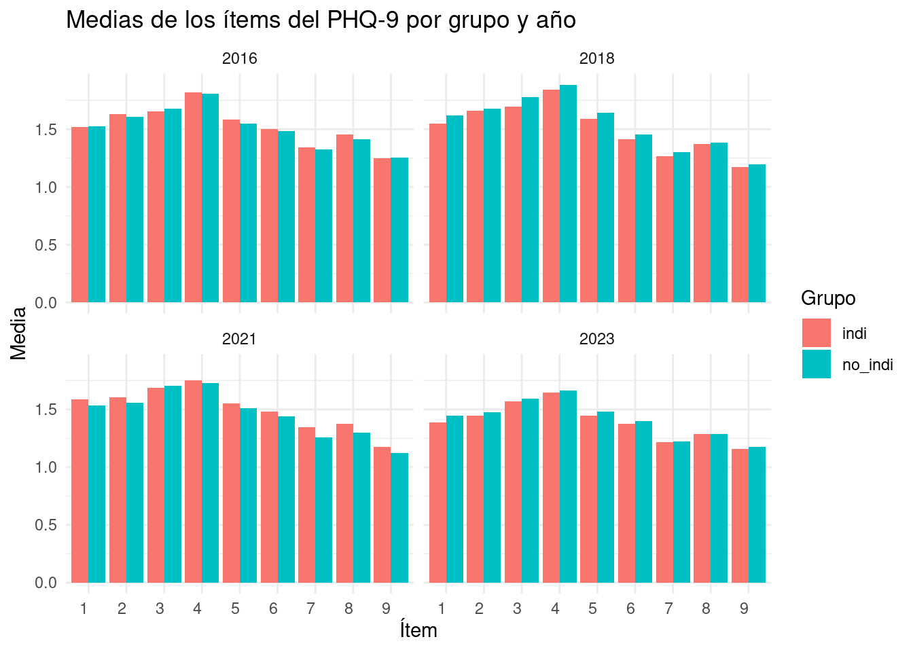
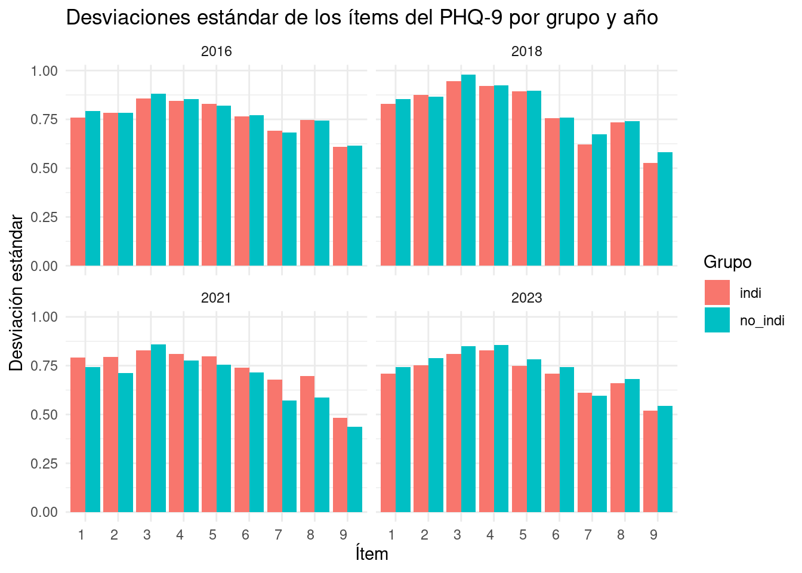
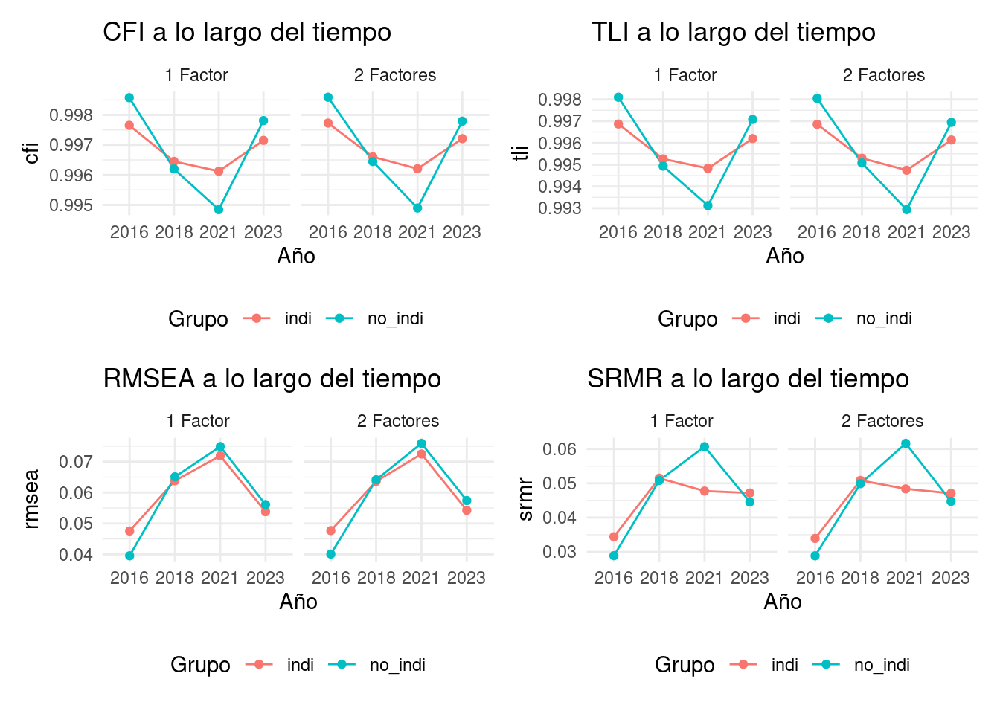

Estos modelos extienden los anteriores a situaciones donde tenemos múltiples grupos o mediciones en diferentes momentos.
El subíndice \(g\) indica que los parámetros pueden variar entre grupos u ocasiones.
Nos permiten comparar la estructura factorial entre diferentes poblaciones o a lo largo del tiempo.
0.2.1 Niveles de Invarianza de Medición
Invarianza Configural:
Asegura que la estructura básica del modelo (número de factores y patrón de cargas) es la misma en todos los grupos.
No requiere que los valores de las cargas sean iguales.
Invarianza Débil (Métrica):
Requiere que las cargas factoriales (\(\Lambda_g\)) sean iguales entre grupos.
Implica que los factores tienen el mismo significado en todos los grupos.
Invarianza Fuerte (Escalar):
Además de la invarianza débil, requiere que los interceptos (\(\tau_g\)) sean iguales.
Permite comparar las medias de los factores latentes entre grupos.
Invarianza Estricta:
Además de la invarianza fuerte, requiere que las varianzas residuales (\(\Theta_g\)) sean iguales.
Es el nivel más estricto de invarianza, raramente alcanzado en la práctica.
Estos niveles de invarianza son cruciales para asegurar que estamos midiendo los mismos constructos de la misma manera en diferentes grupos o momentos, permitiendo comparaciones significativas. Los análisis que siguen los realizaremos utilizando la librería Lavaan diseñada para entorno R Rosseel, Jorgensen, and De Wilde (2012)
Rosseel, Yves, Terrence D. Jorgensen, and Luc De Wilde. 2012. “Lavaan: Latent Variable Analysis.” Comprehensive R Archive Network. https://doi.org/10.32614/CRAN.package.lavaan.
0.3 Análisis Invarianza ELRI - PHQ9
El Cuestionario de Salud del Paciente-9 (PHQ-9) es una herramienta ampliamente utilizada para evaluar síntomas depresivos. Sin embargo, es crucial asegurar que este instrumento mantenga su validez y fiabilidad al aplicarse en diferentes grupos culturales y a lo largo del tiempo. Este reporte describe la estrategia propuesta para evaluar la invarianza de medición del PHQ-9 entre poblaciones indígenas y no indígenas, así como su invarianza longitudinal.
Nuestro estudio se centrará en dos aspectos principales:
Invarianza entre grupos: Comparación entre poblaciones indígenas y no indígenas.
Invarianza longitudinal: Evaluación de la consistencia de las mediciones a lo largo del tiempo.
Para abordar estos objetivos, adoptaremos una metodología basada en el Análisis Factorial Confirmatorio Multigrupo (MGCFA), siguiendo un enfoque similar al utilizado por Saunders et al. (2023) en su estudio sobre la invarianza del PHQ-9 y GAD-7 entre géneros y, tambien, el realizado por Harry et al. Harry et al. (2021) que realiza análisis de invarianza del PHQ9 entre diferentes grupos étnicos.
Saunders, Rob, Delilah Moinian, Joshua Stott, Henry Delamain, Syed Ali Naqvi, Satwant Singh, Jon Wheatley, Stephen Pilling, and Joshua E. J. Buckman. 2023. “Measurement Invariance of the PHQ-9 and GAD-7 Across Males and Females Seeking Treatment for Common Mental Health Disorders.”BMC Psychiatry 23 (1): 298. https://doi.org/10.1186/s12888-023-04804-x.
Harry, Melissa L., R. Yates Coley, Stephen C. Waring, and Gregory E. Simon. 2021. “Evaluating the Cross-Cultural Measurement Invariance of the PHQ-9 Between American Indian/Alaska Native Adults and Diverse Racial and Ethnic Groups.”Journal of Affective Disorders Reports 4 (April): 100121. https://doi.org/10.1016/j.jadr.2021.100121.
1 estrategia de análisis
1.1 Preparación de datos
Organizar los datos en formato longitudinal, con cada participante teniendo múltiples puntos de tiempo.
Codificar las variables de grupo (indígena vs. no indígena) y tiempo.
1.2 Análisis descriptivo
Calcular estadísticas descriptivas para los ítems del PHQ-9 en cada punto de tiempo y para cada grupo.
Generar matrices de correlación y visualizarlas con mapas de calor.
1.3 Especificación del modelo de medición:
Definir el modelo de un factor para el PHQ-9, donde los 9 ítems cargan en un factor latente de depresión.
Especificar el modelo para múltiples grupos y múltiples puntos de tiempo simultáneamente.
Realizar un CFA para cada grupo y cada punto de tiempo por separado para evaluar el ajuste del modelo base.
Evaluar los índices de ajuste: CFI, TLI, RMSEA, y SRMR.
1.5 Análisis de invarianza multigrupo-longitudinal:
Seguir una secuencia de modelos anidados cada vez más restrictivos:
Invarianza configural:
Estimar el modelo sin restricciones entre grupos y tiempos. Este modelo establece la línea base para comparaciones posteriores.
Invarianza métrica (débil):
Restringir las cargas factoriales para que sean iguales entre grupos y tiempos. Comparar con el modelo configural.
Invarianza escalar (fuerte):
Además de las cargas, restringir los interceptos para que sean iguales entre grupos y tiempos. Comparar con el modelo métrico.
Invarianza estricta:
Adicionalmente, restringir las varianzas residuales para que sean iguales. Comparar con el modelo escalar.
1.6 Evaluación de la invarianza:
Utilizar cambios en los índices de ajuste para evaluar cada nivel de invarianza:
ΔCFI ≤ 0.01
ΔRMSEA ≤ 0.015
ΔSRMR ≤ 0.030
Considerar el cambio en chi-cuadrado, pero no basarse únicamente en este debido a su sensibilidad al tamaño de la muestra.
1.7 Manejo de la no invarianza:
Si se detecta no invarianza, identificar los ítems específicos que causan el problema.
Considerar la liberación de restricciones para esos ítems (invarianza parcial).
1.8 Análisis de sensibilidad:
Realizar análisis adicionales para evaluar la robustez de los resultados, como:
Usar diferentes estimadores (MLR, WLSMV)
Probar modelos alternativos (por ejemplo, modelos de dos factores)
Esta estrategia permite evaluar simultáneamente si el PHQ-9 funciona de manera equivalente tanto entre grupos (indígenas vs. no indígenas) como a lo largo del tiempo, proporcionando una comprensión más completa de la invarianza de medición del instrumento en este contexto específico.
1.8.1 Preparación datos
cat("\014")
rm(list =ls())gc()
used (Mb) gc trigger (Mb) max used (Mb)
Ncells 594599 31.8 1352728 72.3 692251 37.0
Vcells 1105810 8.5 8388608 64.0 1923450 14.7
# Preparar los datos para el gráficodescr_stats_long <- descr_stats %>%pivot_longer(cols =-c(indi, ano), names_to =c("item", ".value"), names_pattern ="g5_(\\d+)_(.*)")
# mediasggplot(descr_stats_long, aes(x = item, y = mean, fill = indi)) +geom_bar(stat ="identity", position ="dodge") +facet_wrap(~ ano) +labs(title ="Medias de los ítems del PHQ-9 por grupo y año",x ="Ítem", y ="Media", fill ="Grupo") +theme_minimal() +theme(axis.text.x =element_text(hjust =1))

# desviaciones estándarggplot(descr_stats_long, aes(x = item, y = sd, fill = indi)) +geom_bar(stat ="identity", position ="dodge") +facet_wrap(~ ano) +labs(title ="Desviaciones estándar de los ítems del PHQ-9 por grupo y año",x ="Ítem", y ="Desviación estándar", fill ="Grupo") +theme_minimal() +theme(axis.text.x =element_text(hjust =1))

1.10 Matrices de correlación por grupo y año
corr_matrices <- elri_inv %>%group_by(indi, ano) %>%do(corr =cor(.[,4:12], use ="pairwise.complete.obs"))
# Función para crear un gráfico de correlación usando ggplot2plot_correlation <-function(cor_matrix, title) { cor_melted <-melt(cor_matrix)ggplot(cor_melted, aes(x = Var1, y = Var2, fill = value)) +geom_tile() +scale_fill_gradient2(low ="blue", high ="red", mid ="white", midpoint =0, limit =c(-1,1), space ="Lab", name="Correlación") +theme_minimal() +theme(axis.text.x =element_text(angle =45, vjust =1, hjust =1)) +coord_fixed() +geom_text(aes(label =round(value, 2)), color ="black", size =3) +labs(title = title, x ="", y ="")}# Crear y mostrar los gráficos de correlación para cada grupo y añocorr_plots <- corr_matrices %>%rowwise() %>%mutate(plot =list(plot_correlation(corr, paste(indi, ano))))# Mostrar los gráficosfor(i in1:nrow(corr_plots)) {print(corr_plots$plot[[i]])}
cfa_results <-expand.grid(indi =levels(elri_inv$indi), ano =levels(elri_inv$ano)) %>%mutate(fit_1f =map2(indi, ano, ~cfa(model_1f, data =filter(elri_inv, indi == .x, ano == .y), estimator ="WLSMV", ordered =paste0("g5_", 1:9))),fit_2f =map2(indi, ano, ~cfa(model_2f, data =filter(elri_inv, indi == .x, ano == .y), estimator ="WLSMV", ordered =paste0("g5_", 1:9))) )
Warning: There were 4 warnings in `mutate()`.
The first warning was:
ℹ In argument: `fit_2f = map2(...)`.
Caused by warning in `lav_object_post_check()`:
! lavaan WARNING: covariance matrix of latent variables
is not positive definite;
use lavInspect(fit, "cov.lv") to investigate.
ℹ Run `dplyr::last_dplyr_warnings()` to see the 3 remaining warnings.
Warning: There were 8 warnings in `mutate()`.
The first warning was:
ℹ In argument: `fit_2f_indices = map(fit_2f, ~fitMeasures(., c("cfi", "tli",
"rmsea", "srmr")))`.
Caused by warning in `lav_object_post_check()`:
! lavaan WARNING: covariance matrix of latent variables
is not positive definite;
use lavInspect(fit, "cov.lv") to investigate.
ℹ Run `dplyr::last_dplyr_warnings()` to see the 7 remaining warnings.
# Preparar datos para gráficosplot_data <- cfa_fit_indices %>%pivot_longer(cols =c(contains("cfi"), contains("tli"), contains("rmsea"), contains("srmr")),names_to =c("model", "index"),names_pattern ="fit_(.f)_indices_(.*)",values_to ="value" )# Función para crear gráficosplot_fit_index <-function(data, index, title) {ggplot(data %>%filter(index ==!!index), aes(x = ano, y = value, color = indi, group = indi)) +geom_line() +geom_point() +facet_wrap(~ model, labeller =labeller(model =c("1f"="1 Factor", "2f"="2 Factores"))) +labs(title = title, x ="Año", y = index, color ="Grupo") +theme_minimal() +theme(legend.position ="bottom")}# Crear gráficosp_cfi <-plot_fit_index(plot_data, "cfi", "CFI a lo largo del tiempo")p_tli <-plot_fit_index(plot_data, "tli", "TLI a lo largo del tiempo")p_rmsea <-plot_fit_index(plot_data, "rmsea", "RMSEA a lo largo del tiempo")p_srmr <-plot_fit_index(plot_data, "srmr", "SRMR a lo largo del tiempo")# Combinar gráficoscombined_plot <- (p_cfi + p_tli) / (p_rmsea + p_srmr)print(combined_plot)

# Imprimir tabla de resumensummary_table <- cfa_fit_indices %>%select(indi, ano, contains("cfi"), contains("tli"), contains("rmsea"), contains("srmr"))print(summary_table)
Ambos modelos (1f y 2f) muestran excelentes valores de CFI (todos > 0.99) para ambos grupos en todos los años. Las diferencias entre los modelos de 1 y 2 factores son mínimas. El grupo no indígena tiende a tener valores CFI ligeramente más altos, excepto en 2021.
1.12.3 TLI (Índice de Tucker-Lewis):
Rango ideal: > 0.95 (mejor cuanto más cerca de 1)
Al igual que con CFI, ambos modelos muestran excelentes valores de TLI (todos > 0.99). Las diferencias entre los modelos de 1 y 2 factores son muy pequeñas. El patrón es similar al CFI, con el grupo no indígena teniendo valores ligeramente más altos, excepto en 2021.
1.12.4 RMSEA (Error Cuadrático Medio de Aproximación):
Rango ideal: < 0.06 (menor es mejor)
Los valores varían entre 0.039 y 0.076, indicando un ajuste de bueno a aceptable. El ajuste parece ser mejor en 2016 para ambos grupos, empeorando ligeramente en los años siguientes. El grupo no indígena tiende a tener valores RMSEA ligeramente más altos en 2021 y 2023.
1.12.5 SRMR (Raíz Cuadrada Media Residual Estandarizada):
Rango ideal: < 0.08 (menor es mejor)
Todos los valores están por debajo de 0.08, indicando un buen ajuste. El ajuste parece ser mejor en 2016 para ambos grupos, con valores más altos en los años siguientes. El grupo no indígena tiende a tener valores SRMR ligeramente más altos en 2021.
1.12.6 En general:
Ambos modelos (1 factor y 2 factores) muestran un ajuste excelente según CFI y TLI, y un ajuste bueno a aceptable según RMSEA y SRMR.
Las diferencias entre los modelos de 1 y 2 factores son mínimas, lo que sugiere que el modelo más simple de 1 factor podría ser preferible por parsimonia.
El ajuste tiende a ser mejor en 2016 para ambos grupos, con un ligero empeoramiento en los años siguientes, especialmente en 2021.
Hay algunas diferencias menores entre los grupos indígena y no indígena, pero en general, los patrones son similares.
El año 2021 muestra el ajuste menos favorable para ambos grupos, lo cual podría estar relacionado con factores externos (como la pandemia de COVID-19).
1.13 Análisis de invarianza multigrupo-longitudinal
1.13.7 Comparaciones para invarianza entre grupos por año
print("Invarianza entre grupos - 2016")
[1] "Invarianza entre grupos - 2016"
print(compare_models(inv_2016))
Scaled Chi-Squared Difference Test (method = "satorra.2000")
lavaan NOTE:
The "Chisq" column contains standard test statistics, not the
robust test that should be reported per model. A robust difference
test is a function of two standard (not robust) statistics.
Df AIC BIC Chisq Chisq diff Df diff Pr(>Chisq)
models$configural 54 229.68
models$metric 62 239.06 6.3346 8 0.6098
models$scalar 79 241.01 5.4052 17 0.9964
Estos resultados sugieren que hay invarianza de medición entre los grupos indígenas y no indígenas en 2016. Esto implica que el PHQ-9 está midiendo el constructo de depresión de manera similar en ambos grupos para este año.
print("Invarianza entre grupos - 2018")
[1] "Invarianza entre grupos - 2018"
print(compare_models(inv_2018))
Scaled Chi-Squared Difference Test (method = "satorra.2000")
lavaan NOTE:
The "Chisq" column contains standard test statistics, not the
robust test that should be reported per model. A robust difference
test is a function of two standard (not robust) statistics.
Df AIC BIC Chisq Chisq diff Df diff Pr(>Chisq)
models$configural 54 352.72
models$metric 62 366.80 8.6571 8 0.3720
models$scalar 79 372.56 14.2857 17 0.6468
Estos resultados sugieren que hay invarianza de medición entre los grupos indígenas y no indígenas en 2018. Esto implica que el PHQ-9 está midiendo el constructo de depresión de manera similar en ambos grupos para este año, al igual que se observó en 2016.
print("Invarianza entre grupos - 2021")
[1] "Invarianza entre grupos - 2021"
print(compare_models(inv_2021))
Warning in lavTestLRT(object = object, ..., model.names = NAMES): lavaan WARNING:
Some restricted models fit better than less restricted models;
either these models are not nested, or the less restricted model
failed to reach a global optimum. Smallest difference =
-0.529035708252081
Scaled Chi-Squared Difference Test (method = "satorra.2000")
lavaan NOTE:
The "Chisq" column contains standard test statistics, not the
robust test that should be reported per model. A robust difference
test is a function of two standard (not robust) statistics.
Df AIC BIC Chisq Chisq diff Df diff Pr(>Chisq)
models$configural 54 366.19
models$metric 62 405.89 22.5320 8 0.00402 **
models$scalar 79 405.36 0.7247 17 1.00000
---
Signif. codes: 0 '***' 0.001 '**' 0.01 '*' 0.05 '.' 0.1 ' ' 1
Advertencias y consideraciones especiales:
Hay una advertencia sobre modelos más restringidos que se ajustan mejor que los menos restringidos, lo cual es inusual y podría indicar problemas en la estimación del modelo. El resultado para la invarianza escalar es sospechoso, con un valor p de 1.00000, lo que es extremadamente raro y podría indicar problemas en la convergencia del modelo.
Estos resultados sugieren que en 2021 no hay invarianza métrica entre los grupos indígenas y no indígenas, lo que implica que las cargas factoriales podrían ser diferentes entre los grupos. El resultado de la invarianza escalar es cuestionable debido a la advertencia y el valor p inusual.
En comparación con años anteriores los resultados de 2021 son notablemente diferentes de los de 2016 y 2018, sugiriendo un cambio en cómo el PHQ-9 funciona entre los grupos en este año.
Recomendaciones:
Investigar más a fondo los modelos para 2021, especialmente el modelo escalar. Considerar la posibilidad de invarianza parcial, donde solo algunas cargas factoriales se mantienen iguales entre los grupos. Examinar los índices de modificación para identificar fuentes específicas de no invarianza. Tener en cuenta factores contextuales (como la pandemia de COVID-19) que podrían haber afectado las respuestas al PHQ-9 de manera diferente entre los grupos en 2021.
print("Invarianza entre grupos - 2023")
[1] "Invarianza entre grupos - 2023"
print(compare_models(inv_2023))
Scaled Chi-Squared Difference Test (method = "satorra.2000")
lavaan NOTE:
The "Chisq" column contains standard test statistics, not the
robust test that should be reported per model. A robust difference
test is a function of two standard (not robust) statistics.
Df AIC BIC Chisq Chisq diff Df diff Pr(>Chisq)
models$configural 54 236.00
models$metric 62 247.25 7.5928 8 0.4742
models$scalar 79 248.56 4.9808 17 0.9978
Estos resultados sugieren que hay invarianza de medición entre los grupos indígenas y no indígenas en 2023. Esto implica que el PHQ-9 está midiendo el constructo de depresión de manera similar en ambos grupos para este año.
Los resultados de 2023 son similares a los de 2016 y 2018, mostrando invarianza tanto métrica como escalar.
El valor de chi-cuadrado base (236.00) es menor que en 2021 (366.19) y similar al de 2016 (229.68), lo que podría indicar un mejor ajuste general del modelo en 2023 comparado con 2021. Los valores p para las pruebas de diferencia son muy altos, especialmente para la invarianza escalar (0.9978), lo que indica un fuerte apoyo a la invarianza entre grupos.
1.13.8 Comparaciones para invarianza longitudinal por grupo
print("Invarianza longitudinal - Indígena")
[1] "Invarianza longitudinal - Indígena"
print(compare_models(inv_indi))
Scaled Chi-Squared Difference Test (method = "satorra.2000")
lavaan NOTE:
The "Chisq" column contains standard test statistics, not the
robust test that should be reported per model. A robust difference
test is a function of two standard (not robust) statistics.
Df AIC BIC Chisq Chisq diff Df diff Pr(>Chisq)
models$configural 108 658.90
models$metric 132 768.60 67.36 24 5.443e-06 ***
models$scalar 183 927.71 335.67 51 < 2.2e-16 ***
---
Signif. codes: 0 '***' 0.001 '**' 0.01 '*' 0.05 '.' 0.1 ' ' 1
print("Invarianza longitudinal - No Indígena")
[1] "Invarianza longitudinal - No Indígena"
print(compare_models(inv_no_indi))
Scaled Chi-Squared Difference Test (method = "satorra.2000")
lavaan NOTE:
The "Chisq" column contains standard test statistics, not the
robust test that should be reported per model. A robust difference
test is a function of two standard (not robust) statistics.
Df AIC BIC Chisq Chisq diff Df diff Pr(>Chisq)
models$configural 108 525.69
models$metric 132 666.93 84.765 24 1.041e-08 ***
models$scalar 183 742.98 161.103 51 2.401e-13 ***
---
Signif. codes: 0 '***' 0.001 '**' 0.01 '*' 0.05 '.' 0.1 ' ' 1
1.13.9 Sin el 2021
# Filtrar los datos excluyendo 2021elri_inv_no_2021 <- elri_inv %>%filter(ano !="2021")# Función para realizar análisis de invarianza longitudinal para un grupo específicoinvariance_by_group_no_2021 <-function(data, group) { data_group <- data %>%filter(indi == group) configural <-cfa(model_1f, data = data_group, group ="ano", estimator ="WLSMV", ordered =paste0("g5_", 1:9)) metric <-cfa(model_1f, data = data_group, group ="ano", estimator ="WLSMV", ordered =paste0("g5_", 1:9),group.equal =c("loadings")) scalar <-cfa(model_1f, data = data_group, group ="ano", estimator ="WLSMV", ordered =paste0("g5_", 1:9),group.equal =c("loadings", "thresholds"))list(configural = configural, metric = metric, scalar = scalar)}# Realizar análisis de invarianza longitudinal para el grupo indígena sin 2021inv_indi_no_2021 <-invariance_by_group_no_2021(elri_inv_no_2021, "indi")# Comparar modelos anidadosprint("Invarianza longitudinal - Indígena (sin 2021)")
Scaled Chi-Squared Difference Test (method = "satorra.2000")
lavaan NOTE:
The "Chisq" column contains standard test statistics, not the
robust test that should be reported per model. A robust difference
test is a function of two standard (not robust) statistics.
Df AIC BIC Chisq Chisq diff Df diff Pr(>Chisq)
models$configural 81 457.95
models$metric 97 520.22 39.087 16 0.001057 **
models$scalar 131 664.43 307.207 34 < 2.2e-16 ***
---
Signif. codes: 0 '***' 0.001 '**' 0.01 '*' 0.05 '.' 0.1 ' ' 1
Aunque el valor p (0.001057) es menor que el umbral convencional de 0.05, es considerablemente mayor que en el análisis que incluía 2021. Esto sugiere una mejora en la invarianza métrica, aunque todavía no se alcanza completamente. Invarianza Escalar: Sigue sin mantenerse, con un cambio en chi-cuadrado altamente significativo (p < 2.2e-16).
La exclusión de 2021 ha mejorado la invarianza métrica, aunque no lo suficiente para alcanzar el umbral convencional de no significación. Esto sugiere que las cargas factoriales son más estables entre 2016, 2018 y 2023, pero aún hay algunas diferencias significativas. Incluso sin 2021, sigue habiendo una falta significativa de invarianza escalar. Esto indica que los interceptos de los ítems varían considerablemente a lo largo del tiempo.
Implicaciones
El año 2021 parece haber contribuido a la falta de invarianza, pero no es la única fuente de variabilidad en la medición a lo largo del tiempo. Aunque hay una mejora en la estabilidad de las cargas factoriales (invarianza métrica), la interpretación de las puntuaciones del PHQ-9 sigue siendo inconsistente a lo largo de los años para el grupo indígena. Las comparaciones de medias latentes o puntuaciones observadas del PHQ-9 a lo largo del tiempo siguen siendo problemáticas, incluso excluyendo 2021.
Recomendaciones
Investigar qué ítems específicos están contribuyendo a la falta de invarianza escalar, ya que este es el problema más persistente.
Considerar la posibilidad de invarianza parcial, donde solo algunos parámetros se mantienen iguales a lo largo del tiempo.
Explorar factores culturales o contextuales que podrían estar influyendo en los cambios en la interpretación o respuesta al PHQ-9 a lo largo del tiempo en el grupo indígena, más allá de los eventos específicos de 2021.
Evaluar si hay diferencias sistemáticas entre pares de años específicos (por ejemplo, 2016 vs. 2018, 2018 vs. 2023) que puedan estar contribuyendo a la falta de invarianza.
Considerar la posibilidad de que el constructo de depresión, tal como lo mide el PHQ-9, pueda estar evolucionando conceptualmente a lo largo del tiempo para este grupo.
# Asumiendo que ya tienes cargadas las bibliotecas necesarias y el modelo definido# Filtrar los datos excluyendo 2021elri_inv_no_2021 <- elri_inv %>%filter(ano !="2021")# Función para realizar análisis de invarianza longitudinal para un grupo específicoinvariance_by_group_no_2021 <-function(data, group) { data_group <- data %>%filter(indi == group) configural <-cfa(model_1f, data = data_group, group ="ano", estimator ="WLSMV", ordered =paste0("g5_", 1:9)) metric <-cfa(model_1f, data = data_group, group ="ano", estimator ="WLSMV", ordered =paste0("g5_", 1:9),group.equal =c("loadings")) scalar <-cfa(model_1f, data = data_group, group ="ano", estimator ="WLSMV", ordered =paste0("g5_", 1:9),group.equal =c("loadings", "thresholds"))list(configural = configural, metric = metric, scalar = scalar)}# Realizar análisis de invarianza longitudinal para el grupo no indígena sin 2021inv_no_indi_no_2021 <-invariance_by_group_no_2021(elri_inv_no_2021, "no_indi")# Comparar modelos anidadosprint("Invarianza longitudinal - No Indígena (sin 2021)")
[1] "Invarianza longitudinal - No Indígena (sin 2021)"
print(compare_models(inv_no_indi_no_2021))
Scaled Chi-Squared Difference Test (method = "satorra.2000")
lavaan NOTE:
The "Chisq" column contains standard test statistics, not the
robust test that should be reported per model. A robust difference
test is a function of two standard (not robust) statistics.
Df AIC BIC Chisq Chisq diff Df diff Pr(>Chisq)
models$configural 81 360.44
models$metric 97 439.97 49.475 16 2.779e-05 ***
models$scalar 131 505.42 139.282 34 1.076e-14 ***
---
Signif. codes: 0 '***' 0.001 '**' 0.01 '*' 0.05 '.' 0.1 ' ' 1